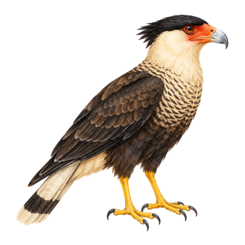
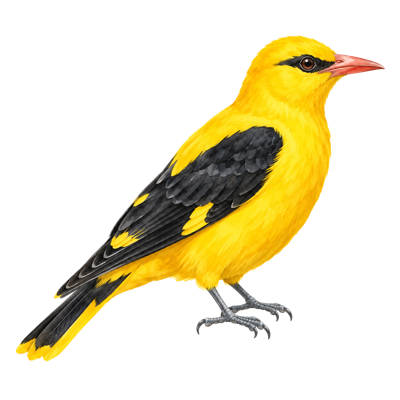
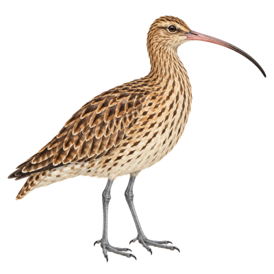

Files
Dateien
Caracara
Gather files scattered across your drives into projects — without ever moving them. Offline-aware, searchable by text and color, and everything stays on your Mac.
Sammle Dateien, die über deine Laufwerke verstreut sind, in Projekten — ohne sie jemals zu verschieben. Offline-bewusst, durchsuchbar nach Text und Farbe, und alles bleibt auf deinem Mac.
In daily use. The public release is coming.
Im täglichen Einsatz. Die Veröffentlichung kommt bald.

Boards
Boards
Pirol
Kanban boards and canvases for the work in front of you. Caracara can hand a group of files straight to a Pirol project.
Kanban-Boards und Canvases für die Arbeit, die gerade ansteht. Caracara kann eine Gruppe von Dateien direkt an ein Pirol-Projekt übergeben.
In development.
In Entwicklung.

Money
Geld
Curlew
Budgeting and bills. Caracara can send items with an amount and a due date to Curlew as bills.
Budgetplanung und Rechnungen. Caracara kann Einträge mit Betrag und Fälligkeitsdatum als Rechnungen an Curlew senden.
In development.
In Entwicklung.